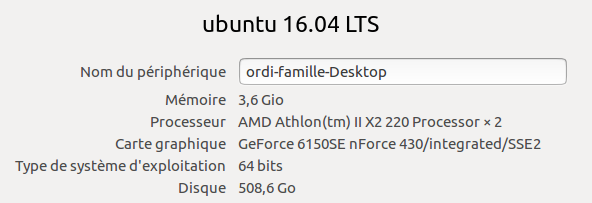

J'utilise un ordi fixe dont les caratéristiques principales sont :

Je suis donc un utilisateur de Linux Ubuntu depuis avril 2007 (1ère version installée Ubuntu 7.04).
Je ne décrirai sur ce site que ce que je fais sur ma machine avec ma configuration.
Avis aux utilisateurs de Windows ou Mac : beaucoup d'infos peuvent néanmoins vous être utiles, mais pour les installations de logiciels ou autres, je ne mettrai aucun tutoriel en ligne (à vous de vous adapter !)
Mes logiciels
Éditeur Atom : éditeur en Anglais qui a une complétion automatique très pratique je trouve. Ça évite les fautes de syntaxe et ça rappelle plein de fonctions qui existent.
La coloration syntaxique est évidemment présente. J'utilise cet éditeur pour créer mes fichiers html ou css. Plus d'infos...
Serveur LAMP : Linux Apache MySQL PHP. Mise en place d'un serveur Web pour faire les tests chez soi. Plus d'infos...
Firefox : navigateur bien connu, que j'utilise préférentiellement par habitude. C'est le navigateur par défaut présent sur ma distribution Ubuntu. Bien entendu, pour développer réellement des pages Web, il faut tester son site sur plusieurs navigateurs.
Gcolor2 : palette de couleurs + capture de couleur à la pipette sur un point de l'écran. Plus d'infos...
Quelques outils en lignes
w3schools : (English) LE site de référence indispensable (selon moi) qui contient tout ce qu'il faut savoir pour développer des pages Web. Le site propose de nombreux "Try it Yourself" qui permettent de tester "en live" sur des exemples simples l'effet des balises.
Générateur de favicon : Permet de créer des images au format de favicon à partir de tout fichier image.
JS Bin : Outil permettant ce tester du code HTML, CSS ou Javascript "en live".
Code Academy : Cet outil nous prend par la main pour nous apprendre à coder pas à pas.
Générateur de faux texte : Cet outil permet de générer des paragraphes de texte "bidon". Ça peut être utile pour teter rapidement la mise en forme d'un site qui n'a pas encore de contenu.
Color Picker : Cet outil permet de choisir d'obtenir le code d'une couleur. Il donne en plus l'association "agréable" d'autres couleurs.
Caractères spéciaux : Listing des caractères spéciaux et de leur codage HTML ou ASCII.
Photos libres : Catalogue de photos et images libres de droit.
Autre site
Hors-sujet !
karate-club-odon : Sur la même maquette que ce site ISNΔ, j'ai construit un mini site pour présenter le club de karaté shotokan de Fontaine-Étoupefour.